2015/5/3E32 735i 部品取りオフ
エンジンOHからしばらくは絶好調だったMゴロー号なのだが・・・・
１年１万キロ持たずして、冷却水が減る＆水温が安定しない現象が再発したorz
症状が出るのは４０００回転から上を積極的に使った時だ。
ヘッドだけ面研してブロックにメタルガスケットが追従できなかったのか・・・？
前回先送りにしたブロック上面の巣から圧が逃げるのか・・・？
最悪はブロックのクラックなのか・・・？
最悪の事態を考慮し、M３０を探す・・・ １機見つかったが18万キロ走行で20諭吉近い見積もりだった（汗
探しながらも、心の中では「とりあえずナンバー切ろう」それで気持ちはほぼ決まっていた。
エンジンの他にも不具合が続き修理に疲れてしまったのだ。
そんな時、とあるE34オフで「735もM30やろ？ 長野の‘ともパパ’さんに置いてる７３５譲ってくれへんか聞いてみ！」との話が！
その時に思った気持ちを思い返してみよう・・・・・
Mゴロー心の声：「え？！車１台丸ごと？ムリムリ！！ どこに置く？どうやってバラす？」
・
・
・
・
・
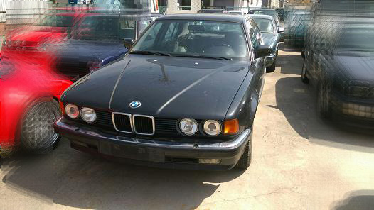
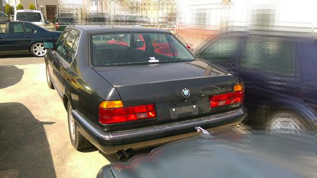
それから約２週間後・・・ 735がやってきた！ 自分の中で壊れてはいけない何かが壊れた気がする（笑
譲ってもらった経緯を話そう・・・・
その、とあるE34オフの数日後にDD号ファイナルオフでともパパさんとお会いした。これがナイスタイミングだった！
そこで相談の結果、「朽ち果てる前に是非使ってください！」ってことで７３５を快く譲ってくれることになったのだ！
本当にこれでいいのか？ 正直なところ、少し悩んだ。といっても５分くらいだが（笑
とりあえず、いつもお世話になっているお店に相談
↓
しばらくお店に置かせてもらえることに！
↓
どうやって持ってくる？
↓
自走？！ 陸送にしとき！
↓
到着！
こんな具合だ。
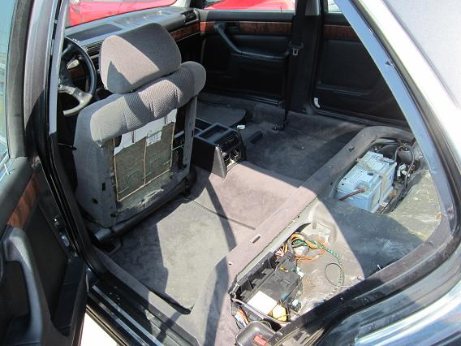
この７３５は神戸で納車、その後RSGGさんのお兄さんが中古で購入し乗らなくなって、ともパパさんとこに来たそうだ。
実質2オーナーで素性がはっきりしていることも安心だ。さらに走行距離が47000ｋｍと慣らしを終えたくらいの距離しか走っていないのだ！
保管状況も良かったのだろう。ゴムやプラスチックの劣化がほとんど見られない極上車両だ。
Mゴローはエンジンしか必要ないので、ともパパさんに譲ってもらう前に必要な部品は取ってもらうようお願いした。
なので、内装は写真のような状況なのだ（笑
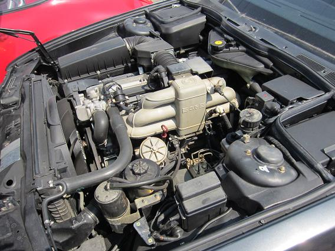
エンジンを掛けてみる。M３０とは思えない異常なほど静かだ。これは期待できそうだ！
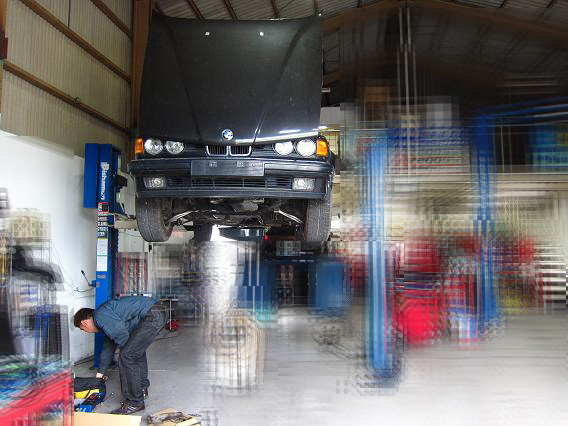
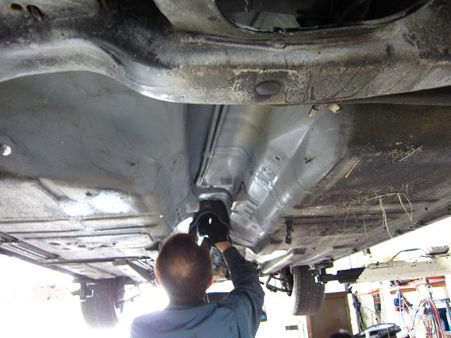
お店のご好意でリフトまで使わせてもらったm(__)m
ALPYさんとTINAさんによってどんどんバラされていきます。 AT降りるまでたった１時間弱だった（汗
断熱材も全て剥がして保管です。何もかもが極上部品だ。
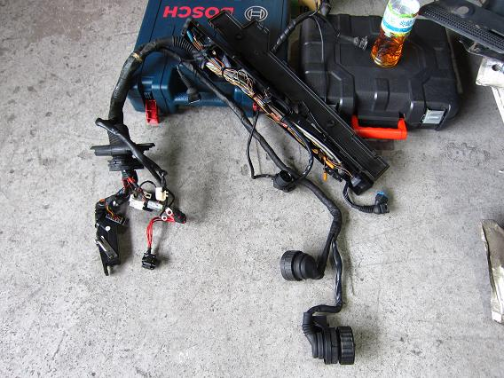
これはエンジンのメインハーネスだ。 ２０年経過しているとは思えない。新品でもこんなもんだろう。
これも移植する予定だ。
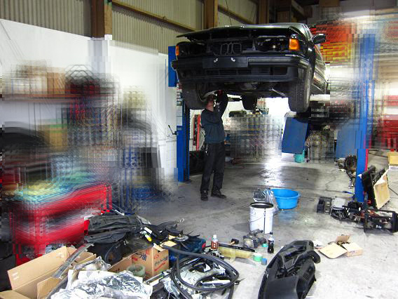
外装と内装はほぼ取っただろうか。あとは足回りとエンジンくらいだ。
右側と手前のパーツの山が剥ぎ取った部品だ。 ATはTKさんに引き取ってもらった。
他にもたくさんの部品が日本全国のE34オーナーの下に渡っていった。
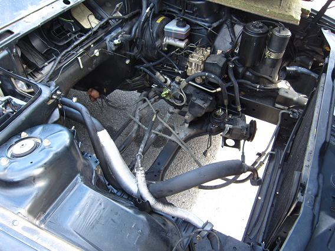
そして、エンジンが降りていよいよ剥ぎ取りも最終段階だ。
１つ悔いが残っている。PSギアボックスがサーボ式だったので外さなかったのだが、ノンサーボも内部は同一機構のようだ。
外しておけば良かった・・・
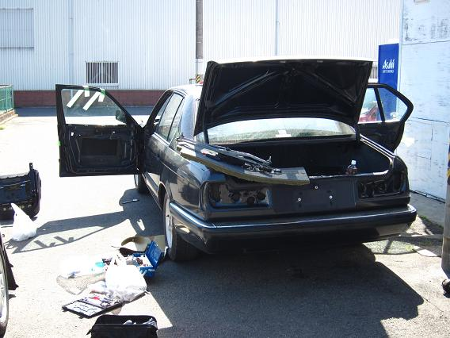
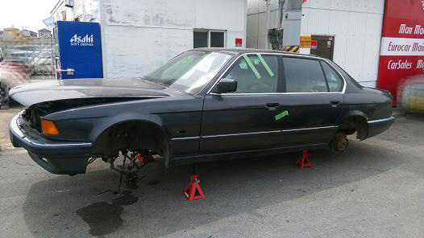
ここまで取れば車も成仏できるだろう！ 最後に足回りを外して終了だ！
修理金額が車両金額を上回るようになると、共食いが始まる。
供給終了部品も今年になって更に増えてきた。今後、この年代の車に乗り続けるには部品取りが必要になってきそうだ。
仕方ないことだが、好きな年代の車を１台潰してしまうのはツラい。今回外した部品は有効に使いたい。
今回快く譲っていただいた、ともパパさんとRSGGさんには本当に感謝している。この機会がなければ、３４は今頃‘一時抹消’になっていただろう。
他にも735を譲り受けるにあたって背中をグイグイ押してくれた牛ちゃん、作業を手伝っていただいたALPYさんTINAさん、
陸送の段取りと場所提供していただいたSCOT水野氏にもお世話になり感謝している。
部品は取り終えたが、これからがメインのエンジンフルOH作業だ。 良いとこ取りで最低でも１０万キロは持つエンジンにしたい。
OHの様子はまたレポートとしてUPする。